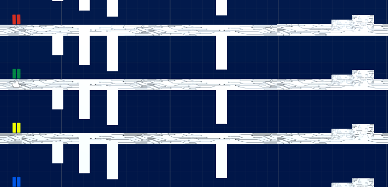

Portfolio
I have mainly worked with Unity3D but I have experience with Unreal Engine 4 as well.
You can see some of my work below.
- Terra Nostra | Unity3D
- Thesis: Quiz game about European flags | Unity3D
- VR game for the museum Mosede Fort | Unity3D
- NGJ Plays | Unity3D
- App for Videnskab.dk | Android Studio
- Designing and developing new ideas and levels
- Bug- and play testing
- Academic research and writing design documents
- Danish and English translations
- Game design
- Academic research and testing
- UI design
- Interaction method
- Design and research of identity cues
- Narrative and translation
- Game design
- Level design
- Controller UI

Terra Nostra
2014 | Game designer at the Medialogy Purposive Game Production | Unity3D
The Purposive Game Production at Aalborg University was an attempt to replicate the development processes made in the industry as opposed to student projects. The final product was the 3D platformer game Terra Nostra bearing the theme of global warming. I mainly worked with:

Thesis: Quiz game about European flags
2016 | Game designer | Unity3D
Our Master’s thesis, titled "How cheating and conation influence game-based learning" was a study of how cheating in a learning context affected player behavior and learning outcome. The game made were a quiz game of European flags with the possibility to cheat.

VR game for the museum Mosede Fort
2015 | Game designer | Unity3D & Oculus Rift
In collaboration with the museum Mosede Fort, we developed a VR prototype using green screen footage for in-game characters.
The project focused on learning outcome in an interactive narrative. However, we also investigated how a novel interface for interaction could be implemented in VR without using controllers.

NGJ Plays
2016 | Game designer | Unity3D
For Nordic Game Jam 2016, we made a multiplayer 2D platformer for ChromeCast. Players would be randomly assigned to one of the colors and controlling their players by entering through NGJplays.com.


App for Videnskab.dk
2017 | Designer | Android Studio
This app is a simple WebView for the website. It was made as marketing research in order to establish whether or not it was cost-effective to develop a more detailed application.

Content © Videnskab.dk